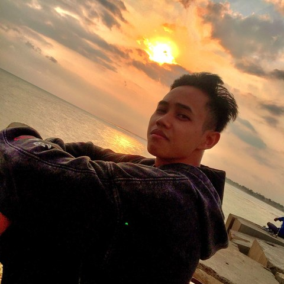

Kenapa Anthropic Malah Umbar Riset Al-nya? Padahal Itu Senjata Rahasianya
Teknologi • AI • Strategi Kenapa Anthropic Malah Umbar Riset AI-nya? Padahal Itu Senjata Rahasianya Di dunia yang mengagungkan kerahasiaan, ada satu…
6 mnt baca

Penulis
Founder GoWithDME
Saya sudah dari zaman sekolah suka ngulik blog di Blogger. Tapi saya selalu terbawa arus untuk memperbaiki dan mempercantik tampilan UI, jadi tidak fokus lagi dan sering berhenti di tengah jalan karena akhirnya menyerah atau burnout.
Blog pertama saya, kalfinsetiawan29.blogspot.com, masih ada sampai sekarang. Lalu pada 2017 saya membuat blog lagi di Blogger dengan domain calvfinka.id selama 3 tahun, dan tidak saya lanjutkan karena tidak konsisten.
Awalnya saya membuat GoWithDME karena pernah menonton konser sendirian, benar-benar sendirian.
Mulai ngulik blog di Blogger. Tapi selalu terbawa arus memperbaiki dan mempercantik tampilan UI, jadi tidak fokus lagi dan sering berhenti di tengah jalan karena menyerah atau burnout.
kalfinsetiawan29.blogspot.com, dan masih ada sampai sekarang.
Membuat blog lagi di Blogger dengan domain calvfinka.id selama 3 tahun. Tidak saya lanjutkan karena tidak konsisten.
Berawal dari pengalaman menonton konser sendirian, benar-benar sendirian.
Teknologi • AI • Strategi Kenapa Anthropic Malah Umbar Riset AI-nya? Padahal Itu Senjata Rahasianya Di dunia yang mengagungkan kerahasiaan, ada satu…
6 mnt baca
BANDUNG, 27 November 2026 - Kalender konser Indonesia pada Sabtu, 28 November 2026 dan Minggu, 29 November 2026 dipenuhi 15 event di 8 kota.
10 mnt baca
Dari balada selepas hujan sampai punk yang lahir di reruntuhan kota, inilah lagu-lagu Dongker yang paling layak kamu dengarkan sambil membaca ceritanya.
9 mnt baca
Coba buka Spotify Dongker sekarang. Satu lagu, "Disarankan di Bandung", sudah diputar sekitar 132 juta kali.
6 mnt baca
Kampus besar tidak otomatis membuat pertemanan jadi luas. Banyak mahasiswa justru merasa lingkarannya tetap kecil: itu-itu saja, dan sebatas satu kelas…
2 mnt baca
If you have ever shuffled an Indonesian indie playlist, the same voice has probably turned up under three different names.
14 mnt baca